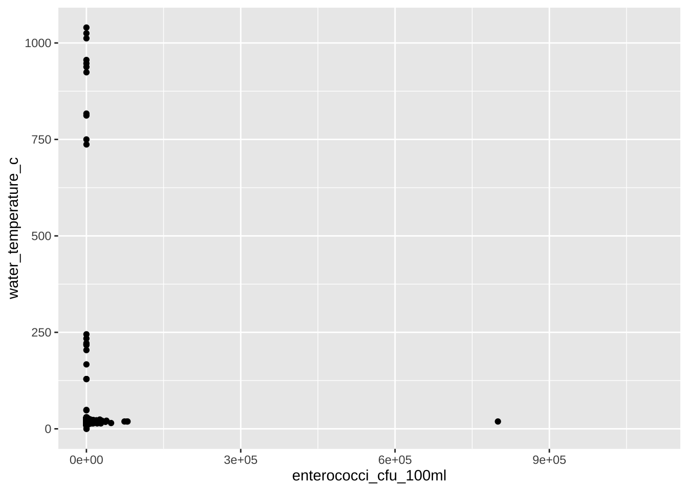
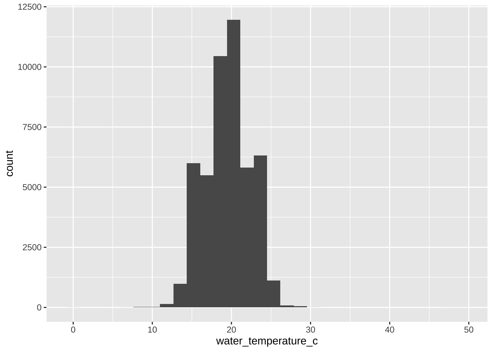
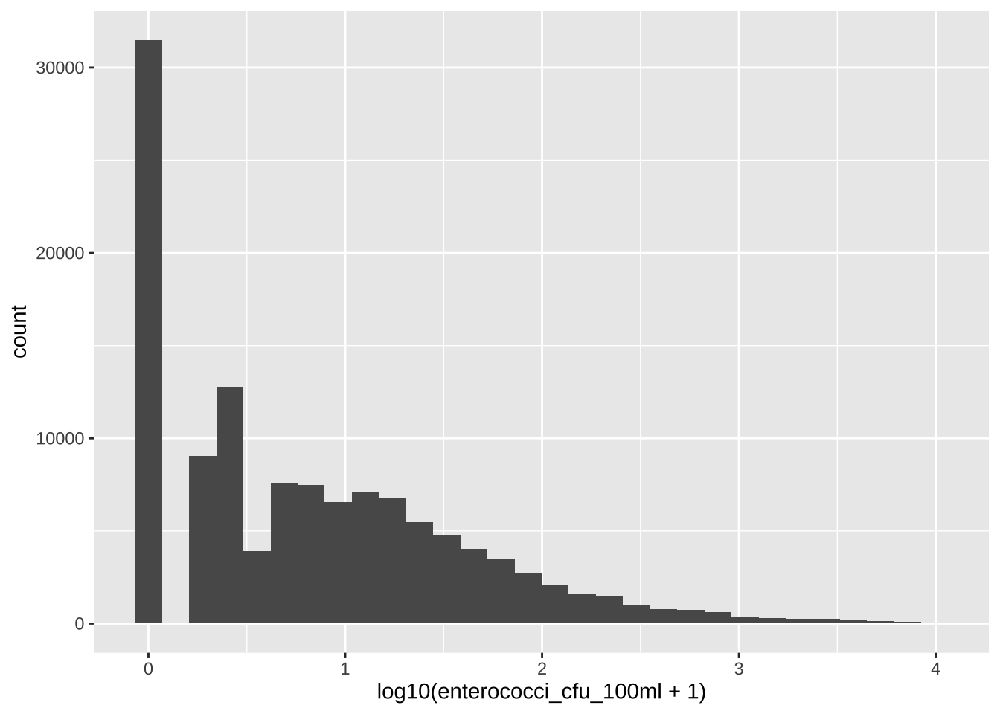
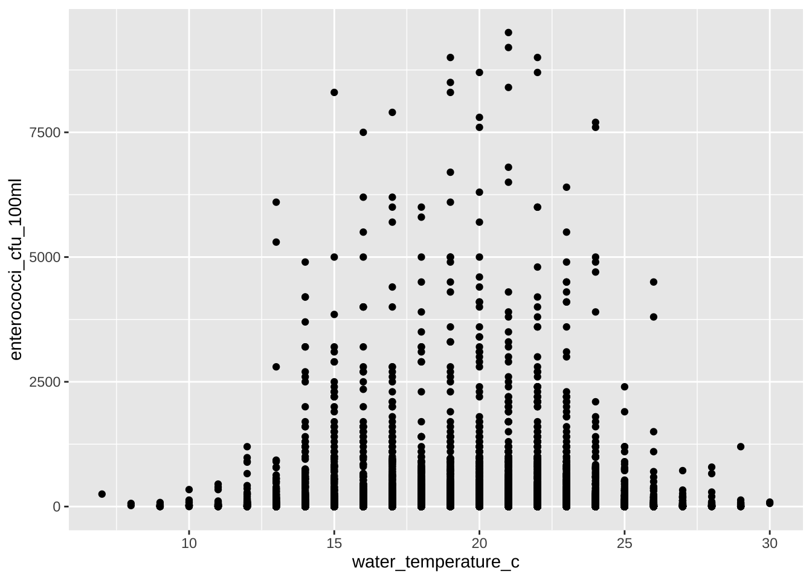
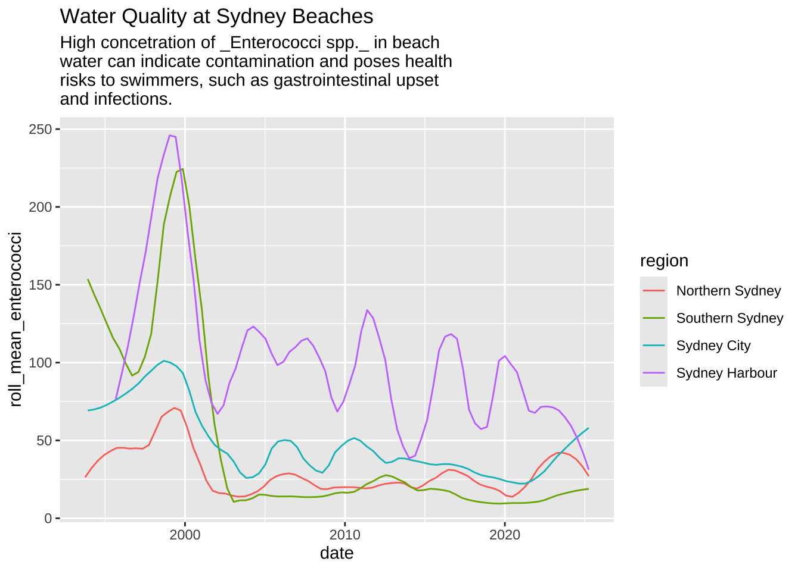
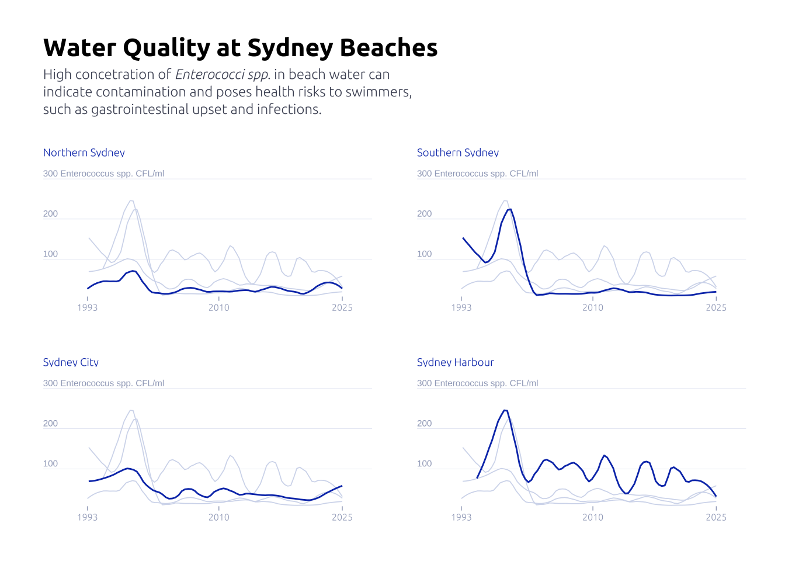

tuesdata <- tidytuesdayR::tt_load(2025, week = 20)
water_quality <- tuesdata$water_quality
weather <- tuesdata$weatherLoading data and libraries
library(tidyverse)
library(glue)
library(scales)
library(showtext)
library(ggtext)
font_add_google("Ubuntu", "Ubuntu", regular.wt = 300, bold.wt = 700)
showtext_auto()
showtext_opts(dpi = 300)Data analysis
water_quality <- water_quality |>
mutate(date_m = month(date), date_y = year(date)) |>
mutate(month_year = str_c(date_m,'-',date_y))Q1
Is there a correlation between enterococci_cfu_100ml and water_temperature_c?
water_quality |>
ggplot(aes(x = enterococci_cfu_100ml, y = water_temperature_c)) +
geom_point()
water_quality |>
filter(water_temperature_c < 100) |>
ggplot(aes(x = water_temperature_c)) +
geom_histogram()
water_quality |>
filter(enterococci_cfu_100ml < 10000) |>
ggplot(aes(x = log10(enterococci_cfu_100ml + 1))) +
geom_histogram()
water_quality |>
filter(water_temperature_c < 40, water_temperature_c > 0) |>
filter(enterococci_cfu_100ml < 10000) |>
ggplot(aes(x = water_temperature_c, y = enterococci_cfu_100ml)) +
geom_point()
A Well, not that simple.
Q2
Time series, how sparce?
n_swim_sites <- water_quality |> distinct(swim_site) |> nrow()
# by day
n_dates <- water_quality |> distinct(date) |> nrow()
data_sparcity <- (water_quality |> distinct(swim_site, date) |> nrow()) / (n_dates * n_swim_sites)
print(glue('Data sparcity by day: {percent(data_sparcity)}'))Data sparcity by day: 30%# by month
n_months <- water_quality |> distinct(month_year) |> nrow()
data_sparcity <- (water_quality |> distinct(swim_site, month_year) |> nrow()) / (n_months * n_swim_sites)
print(glue('Data sparcity by before: {percent(data_sparcity)}'))Data sparcity by before: 81%Smoothing data
To work with so many data points, data can be very noise. So I’m adding a rolling mean of three months.
data2plot <-
water_quality |>
group_by(region) |>
filter(n() >= 99) |>
ungroup() |>
filter(enterococci_cfu_100ml < 10000) |>
group_by(region, date_m, date_y) |>
summarize(mean_enterococci = mean(enterococci_cfu_100ml)) |>
ungroup() |>
mutate(date = as.Date(str_c(date_y, '-', date_m, '-', '01'))) |>
group_by(region) |>
arrange(region, date) |>
mutate(
roll_mean_enterococci = zoo::rollmeanr(mean_enterococci, k = 12, fill = NA) # k=3 for 3 periods
) |>
ungroup() |>
filter(!is.na(roll_mean_enterococci))Plot
Before
data2plot |>
filter(region != 'Western Sydney') |>
ggplot(aes(x = date, y = roll_mean_enterococci)) +
geom_smooth(aes(color = region), linewidth = 0.5, se = FALSE, span = .2) +
labs(
title = 'Water Quality at Sydney Beaches',
subtitle = str_wrap(
width = 50,
'High concetration of _Enterococci spp._ in beach water can indicate contamination and poses health risks to swimmers, such as gastrointestinal upset and infections.'
)
) 
After
axis_text <-
tibble(y = c(100, 200, 300)) |>
mutate(
label = if_else(
y == max(y),
str_c(y, ' Enterococcus spp. CFL/ml'),
str_c(y)
)
) |>
mutate(date = data2plot$date |> min())
data2plot |>
filter(region != 'Western Sydney') |>
ggplot(aes(x = date, y = roll_mean_enterococci)) +
geom_text(
data = axis_text,
aes(y = y, label = label, x = date - 2000),
size = 2,
color = '#9fa8c2',
hjust = 0,
vjust = -0.4
) +
geom_smooth(aes(color = region), linewidth = 0.5, se = FALSE, span = .2) +
guides(color = 'none') +
facet_wrap(~region, ncol = 2, scales = 'free_x') +
gghighlight::gghighlight(
roll_mean_enterococci >= 0,
keep_scales = TRUE,
use_direct_label = FALSE,
unhighlighted_params = list(
alpha = 0.75,
linewidth = 0.3,
color = '#d3daed'
)
) +
theme_minimal() +
labs(
x = NULL,
y = NULL,
title = 'Water Quality at Sydney Beaches',
subtitle = str_wrap(
width = 60,
'High concetration of _Enterococci spp._ in beach water can indicate contamination and poses health risks to swimmers, such as gastrointestinal upset and infections.'
) |> str_replace_all('\n','<br>')
) +
theme(
panel.grid.major.x = element_blank(),
panel.grid.major.y = element_line(
linewidth = .1,
color = '#d3daed'
),
panel.grid.minor = element_blank(),
axis.ticks.x = element_line(color = '#9fa8c2', linewidth = .25),
text = element_text(family = "Ubuntu"),
axis.text = element_text(color = '#9fa8c2', hjust = .5, size = 6),
axis.text.y = element_blank(),
plot.title = element_text(family = 'Ubuntu', face = 'bold', size = 16),
plot.subtitle = element_markdown(
family = 'Ubuntu',
size = 9,
color = '#4a5063',
margin = margin(0, 0, 20, 0),
lineheight = 1.25,
),
panel.spacing = unit(2, "lines"),
strip.placement = "outside",
strip.text = element_text(
# hjust = -0.11,
color = '#0d3bb8',
hjust = 0,
size = 7,
margin = margin(0, 0.5, 0, 0)
),
strip.background = element_blank(),
plot.margin = margin(25, 25, 25, 25)
) +
scale_y_continuous(expand = c(0, 0, 0, 0)) +
scale_x_date(
expand = c(0, 0, 0.1, 0),
label = year,
breaks = c(
data2plot$date |> min(),
as.Date('2010-01-01'),
data2plot$date |> max()
)
) +
scale_color_manual(values = c('#0d3bb8', '#0d3bb8', '#0d3bb8', '#0d3bb8'))